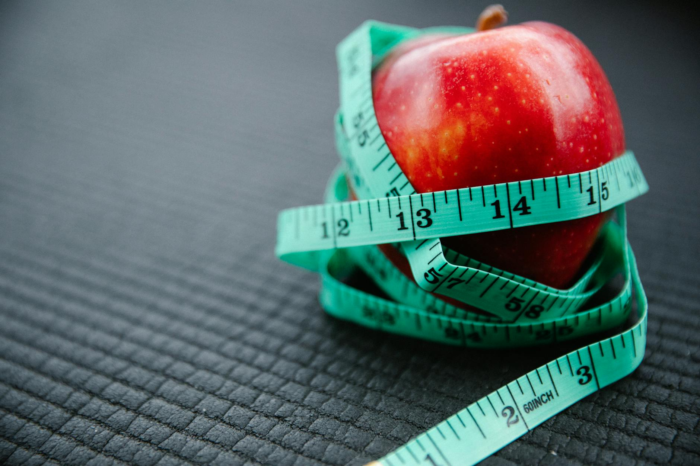

Is Calorie Awareness Key to Sustainable Weight Loss?
Key takeaways
- When we talk about weight loss, the concept of calories often comes up.
- But what does it really mean to be calorie-aware, and how can it help you achieve sustainable results?
- Focus on: Understanding the Role of Calories.

Understanding the Role of Calories
When we talk about weight loss, the concept of calories often comes up. But what does it really mean to be calorie-aware, and how can it help you achieve sustainable results? It's not about deprivation, but about making informed choices that nourish your body while managing your energy intake.
Think of calories as units of energy your body uses for everything from breathing to exercising. To lose weight, you generally need to consume fewer calories than your body burns. However, the quality of those calories matters just as much as the quantity. Focusing solely on restriction can lead to nutrient deficiencies and make long-term adherence difficult. A balanced approach emphasizes nutrient-dense foods that keep you feeling full and satisfied.
Making Calorie-Aware Choices
Sustainable weight loss is a marathon, not a sprint. It's built on habits you can maintain over time. Here’s how to integrate calorie awareness into your daily life:
1. Prioritize Whole Foods
Whole, unprocessed foods like fruits, vegetables, lean proteins, and whole grains are typically lower in calorie density and higher in nutrients and fiber. This means you can eat larger portions that help you feel full, making it easier to manage your calorie intake without feeling deprived. For instance, a large salad packed with vegetables and lean chicken will likely be more satisfying and lower in calories than a small, processed snack.
2. Portion Control is Key
Being aware of portion sizes is crucial. You don't necessarily need to eliminate your favorite foods, but understanding how much you're eating can make a big difference. Using smaller plates, measuring out servings, or simply paying attention to your body's hunger and fullness cues can help. Learning to recognize a standard serving size for common foods can be very empowering. You might find that your perception of a serving size was larger than you thought!
3. Hydration Matters
Sometimes, thirst can be mistaken for hunger. Drinking plenty of water throughout the day can help manage appetite and boost metabolism. Aim for at least 8 glasses of water daily. Sometimes, a simple glass of water can curb a craving or a feeling of hunger. Staying hydrated is one of the easiest healthy habits to adopt.
4. Mindful Eating Practices
Slow down and savor your meals. Eating mindfully means paying attention to the taste, texture, and smell of your food, and recognizing when you are full. This practice helps improve digestion and can prevent overeating. It’s about enjoying your food and listening to your body's signals. This is a great way to build a better relationship with food, which is crucial for long-term success. This approach can also enhance your enjoyment of recipes.
5. Smart Swaps and Additions
Consider making small, smart swaps. For example, opting for grilled chicken over fried, or using herbs and spices for flavor instead of high-calorie sauces. You can also add calorie-free or low-calorie ingredients like leafy greens to bulk up meals. Incorporating healthy fats, such as those found in Extra Virgin Olive Oil, can add flavor and satiety to your meals without excessive calories.
Beyond the Calorie Count
While calorie awareness is important, it's just one piece of the puzzle. Other lifestyle factors significantly impact weight management and overall health. Adequate sleep, managing stress, and regular physical activity all play vital roles. A holistic approach that considers these elements alongside mindful eating is the most effective path to sustainable weight loss and well-being.
Educational only — not medical advice.
Disclosure: This page may contain affiliate links.
Related posts

What Small Habits Improve Your Health?
Discover simple, sustainable habit changes to boost your well-being. Small steps for big health improvements.
Read more →
What's a Longevity Daily Routine? Aligning Your Day for a Healthier, Longer Life
Discover how to build a longevity daily routine aligned with scientific evidence. Learn practical tips for better sleep, nutrition, movement
Read more →
What's the Best Way to Prepare for Sleep Each Night?
Discover effective bedtime routines and wind-down habits to improve your sleep quality. Learn practical tips for a more restful night.
Read more →